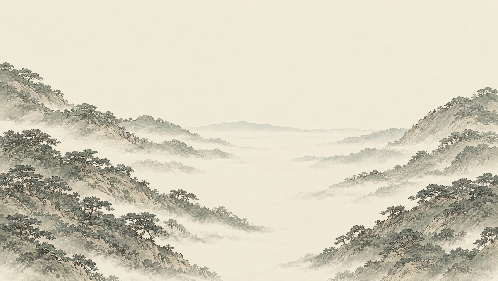

먹선과 번짐
돌의 선이 산과 안개로 이어지는 수묵의 표현을 사용합니다.
04 · MOOD
먹선이 풍경이 되고,
여백 사이로 목소리가 이어집니다.

돌의 선이 산과 안개로 이어지는 수묵의 표현을 사용합니다.
종이빛 바탕과 낮은 채도의 풍경에 여백을 두어 시선이 머물게 합니다.
풍경과 인물의 목소리가 이야기를 이끌고, 글은 필요한 순간에 더합니다.
무드 레퍼런스로 모은 Planet of Lana에서는 넓은 풍경과 작은 인물의 관계를 살펴봅니다. 이 작업에서는 그 거리감을 옅은 수묵과 느린 이동으로 옮겨, 사람의 목소리를 만나는 순간에 시선이 모이도록 합니다.
Wishfully. (2023). Planet of Lana. Thunderful Publishing.
Story에서는 선과 번짐으로 풍경을 만들고, Index에서는 같은 종이빛 바탕 위에 스캔의 표면을 놓습니다. 화면의 장식을 줄여 눈매와 갈기, 작은 선각이 먼저 보이도록 합니다.